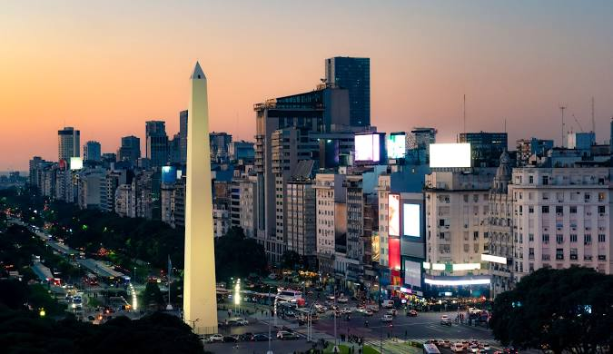

Descripción
La Avenida 9 de Julio, inaugurada en 1937 en la Ciudad de Buenos Aires, es reconocida como una de las más anchas del mundo (140 metros) y atraviesa el centro desde Retiro hasta Constitución, albergando iconos como el Obelisco. Su diseño busca ser un pulmón verde con especies nativas, conectando puntos clave del turismo y la cultura porteña.
